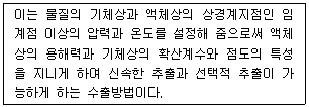

식품산업기사 (2016-03-06 기출문제)
1과목: 식품위생학
1. 장염 비브리오균 식중독을 주로 발생시키는 식품은?
- 어패류 가공품
- 육류가공품
- 어육 연제품
- 우유제품
(정답률: 89%)

2. 발생 즉시 환자를 격리시키고 발생 또는 유행 즉시 방역대책을 수립하여야 하는 법정 감염병이 아닌 것은?
- 폴리오
- 장티푸스
- 콜레라
- 세군성이질
(정답률: 71%)
3. 우유에 70% ethyl alcohol을 넣고 그에 다른 응고물 생성 여부를 통해 알 수 있는 것은?
- 산도
- 지방량
- Lactase 유무
- 신선도
(정답률: 70%)
4. 유레성 포름알데히드와 관계 없는 물질은?
- 요소수지
- urotropin
- rongalite
- nitrogen trichloride
(정답률: 61%)
5. PYC에 대한 설명으로 틀린 것은?
- 내수성이 좋다.
- 내산성이 좋다.
- 가격이 저렴하다.
- 열접착은 어렵다.
(정답률: 74%)
6. 주로 와인과 같은 주류 발효 과정에서 생성되는 부산물로 아르기닌 등이 효모의 작용에 의해 형성된 요소(UREA)가 에탄올과의 반응으로 생성되며 발암성 물질이기도 한 이것은?
- 아크릴아마이드
- 벤조피렌
- 에탈카바메이크
- 바이오제닉아민
(정답률: 67%)
7. 실험물질을 사육동물에게 2년 정도 투여하는 독성 실험 방법은?
- LD50
- 급성독성실험
- 아급성독성실험
- 만성독성실험
(정답률: 88%)
8. 곤충 및 동물의 털과 같이 물에 잘 젖지 아니하는 가벼운 이물검출에 적용하는 이물검사는?
- 여과법
- 체분별법
- 와일드만 라스크법
- 침강법
(정답률: 78%)
9. 농약의 잔류성에 대한 설명으로 틀린 것은?
- 농약의 분해속도는 구성성분의 화학구조의 특성에 따라 각각 다르다.
- 잔류기간에 따라 비잔류성, 보통 잔류성, 잔류성, 영구 잔류성으로 구분한다.
- 대부분은 물로 씻으면 제거가 되지만, 일부 경우 가열 조리 시 농축되어 제거되지 않고 인체 흡수율이 높아진다.
- 중금속과 결합한 농약들은 중금속이 거의 영구 적으로 분해되지 않아 영구잔류성으로 분류한다.
(정답률: 76%)
10. HACCP에 대한 설명 중 틀린 것은?
- 위해분석(HA)과 중요관리점(CCP)으로 구성되어 있다.
- 유통 중의 상품만을 대상으로 하여 상품을 수거 하여 위생상태를 관리하는 기분이다.
- 식품의 원재료에서부터 가공공정, 유통단계 등 모든 과정을 위생 관리한다.
- CCP는 해당 위해 요서를 조사하여 방지,제거한다.
(정답률: 87%)
11. 식용동물에서 동물용 의약품이 동물의 체내대사과정을 거쳐 잔류허용기준 이하의 안전수준까지 배설되는 기간으로 반드시 지켜야 할 지침기간은?
- 기준기간
- 유효기간
- 휴약기간
- 유지기한
(정답률: 70%)
12. 식품첨가물 공전에서 삭제된 화학적합성품이 아닌 것은?
- 보롬산칼륨
- 규소수지
- 표백분
- 데히드로초산
(정답률: 62%)
13. 농약에 의한 식품오염에 대한 설명으로 틀린 것은?
- 농약은 물이나 토양을 오염시키고 식품원료로 사용되는 어패류 등의 생물체에 축적될 수 있다.
- 오염된 농자물이나 어패류를 섭취하면 만성 중독 증상이 나타날 수 있다.
- 유기염소제는 분해되기 어렵다.
- 농약의 잔류기간은 살포장소에서 농약잔류물이 50% 손실되는데 걸리는 기간을 말한다.
(정답률: 76%)
14. 세균에 의한 경구감염병은?
- 유행성 간염
- 콜레라
- 폴리오
- 전염성 설사증
(정답률: 65%)
15. 고등어와 같은 적색 어류에 특히 많이 함유한 물질은?
- glycogen
- purine
- mercaptan
- histidine
(정답률: 77%)
16. 식품에 사용이 허용된 감미료는?
- sodium saccharin
- cyclamate
- nitrotoluidine
- ethylene glycol
(정답률: 74%)
17. 산화방지제에 대한 설명으로 틀린 것은?
- 에리소르빈산 몰식자산프로필 등이 이들 종류에 속한다.
- 수용성인 것은 주로 색소 산화방지제로, 지용성 인 것은 유지류의 산화방지제로 사용된다.
- 구연산, 사과산 등의 유기산류와 병용하면 호력이 더욱 증가된다.
- 천염첨가물로 에리스리톨, 시클로덱스트린시럽 등이 있다.
(정답률: 56%)
18. 다음 중 인수공통감염병이 아닌 것은?
- 야토병
- 탄저병
- 급성회백수염
- 파상열
(정답률: 77%)
19. 과량의 방사선 물질에 오염된 식품을 먹을 때 나타나는 급성방사선 증후군은 일발적으로 전신이 얼마 이상의 용량에 노출된 이후에 나타날 수 있는 가?
- 1 mSv
- 10 mSv
- 100 mSa
- 1 Sv
(정답률: 52%)
20. 미생물의 영양세포 및 포자를 사멸시키는 것으로 정의되는 용어는?
- 간혈
- 가열
- 살균
- 멸균
(정답률: 79%)
2과목: 식품화학
21. 단순 단백질의 구조와 관계없는 결합은?
- 수소결합
- 글리코사이드(glycoside)
- 팹티드 결합
- 소수성 결합
(정답률: 65%)
22. 유화에 대한 설명으로 틀린 것은?
- 수중유적형 유화에는 우유와 아이스크림이 대표적이다.
- 유화제는 친수성과 소수성을 동시에 갖고 있다.
- HLB값이 8~18인 유화제의 경우 수중유적형 유화에 알맞다.
- 유화제는 기름과 물의 계면장력을 증가시킨다.
(정답률: 71%)
23. 다음 중 다른 조건이 동일할 때 전분의 노화가 가장 잘 일어나는 조건은?
- 온도 -30˚C
- 온도 90˚C
- 수분 30~60%
- 수분 90~95%
(정답률: 78%)
24. 점탄성체가 가지는 성질이 아닌 것은?
- 예사성
- 유화성
- 경점성
- 신전성
(정답률: 77%)
25. 무기질 중 체내에서 알칼리 생성원소인 것은?
- Na
- S
- P
- CI
(정답률: 63%)
26. 딸기, 포도, 가지 등의 붉은색이나 보라색이 가공, 저장 중 불안정하여 쉽게 갈색으로 변하는 색소는?
- 엽록소
- 카로티노이드계
- 플라보노이드계
- 안토시아닌제
(정답률: 74%)
27. 식물성 식품의 떫은맛과 관계가 깊은 것은?
- 아미노산
- 탄닌
- 포도당
- 비타민
(정답률: 90%)
28. 전분의 호화에 영향을 주는 요인과 거리가 먼 것은?
- 전분의 종류
- 산소
- 전분입자의 수분 함량
- PH
(정답률: 58%)
29. 관능검사의 사용 목적과 거리가 먼 것은?
- 신제품 개발
- 제품 비합비 결정 및 최적화
- 품질 평가방법 개발
- 제품의 화학적 성질 평가
(정답률: 79%)
30. 특성차이 검사 방법이 아닌 것은?
- 삼전검사
- 다중비교 검사
- 순위법
- 평점법
(정답률: 63%)
31. 관능검사의 묘사분석 방법 중 하나로 제품의 특성과 강도에 대한 모든 정보를 얻기 위하여 사용하는 방법은?
- 텍스쳐 프로필
- 향미 프로필
- 정량적 묘사분석
- 스펙트럼 묘사분석
(정답률: 75%)
32. 수용성 비타민으로서 동식물성 식품에 널리 분포하며 산화환원 반응에 관여하는 여러 효소의 조효소가 되고 결핍되면 구각염 피부염들의 증상을 나타내는 것은?
- 티아민 (B1)
- 리보프라빈 (B2)
- Pyridoxin (B3)
- 비오틴 (비타민 H)
(정답률: 66%)
33. 전분에 대한 설명으로 틀린 것은?
- 전분 분자량은 전분의 호화에 영향을 미치지 않는다.
- 전분을 가수부해할 때 lactose는 생성되지 않는다.
- 호화전분의 노화를 막기 위해서 수분함량을 15%이하로 급격히 줄인다.
- 수분이 많으면 전분호화가 잘 일어나지 않는다.
(정답률: 70%)
34. 유화제 (emulsifying agent)의 설명 중 틀린 것은?
- 구조 내 친수기와 소수기가 있다.
- 천연유화제는 복함지질들이 많다
- 유화액의 형태에 영향을 준다.
- 가공식품의 산화를 방지하는 식품첨가물이다
(정답률: 74%)
35. 새우, 게 등 갑각류의 가열이나 산 처리 시에 적색으로 변하는 것은?
- myoglobin 이 nitrosomyoglobin 으로 변화
- astaxanthin 이 astacin 으로 변화
- chlorophyll 이 pheophytin 으로 변화
- anthcocyan 이 anthocyanidin 으로 변화
(정답률: 84%)
36. 감자를 자른 단면의 효소적 갈변시 생기는 화합물은?
- 캐러멜
- 베타시아닌
- 멜라닌
- 탄닌
(정답률: 66%)
37. 식품의 주 단백질이 잘못 연결된 것은?
- 달걀 - dyalbumin
- 밀가루 - gluten
- 콩 - nryoglobin
- 우유 - casein
(정답률: 60%)
38. 밀감 병조림의 백탁의 원인과 가장 관계가 깊은 성분은?
- 헤스페리딘(hesperidin)
- 트리틴 (trrin)
- 루틴 (rutin)
- 다이진 (daizin)
(정답률: 82%)
39. 무기질의 기능이 아닌 것은?
- 근육 수축 및 신경 흥분, 전달에 관여한다.
- 체액의 PH 및 삼투압을 조절한다.
- 효소, 호르몬 및 항체를 구성한다.
- 뼈와 치아 등의 조직을 구성한다.
(정답률: 68%)
40. 육류의 저장 중 시간이 지남에 따라 갈색을 띠는 물질은?
- oxymyoglobin
- metmyoglobin
- nitrosomyoglobin
- sulfmyoglobin
(정답률: 74%)
3과목: 식품가공학
41. 통조림의 진공도에 관여하는 요소와 가장 거리가 먼 것은?
- 탈기시간 및 온도
- 통조림 원료의 종류
- 내용물의 선도
- 기온 및 기압
(정답률: 59%)
42. 유지 채유과정에서 열처리를 하는 근본적인 이유가 아닌 것은?
- 유리지방산 생성 촉진
- 원료의 수분함량 조절
- 산화효소의 불활성화
- 착유 후 미생물의 오염방지
(정답률: 66%)
43. 달걀의 특성에 대한 설명으로 틀린 것은?
- 양질의 단백질, 지방, 각종 비타민류가 많이 포함되어 있다.
- 난각, 난황, 난백의 크게 3부분으로 이루어져있다.
- 기포성, 유화성, 보수성을 지니고 있어 식품가공에 많이 이용된다.
- 달걀 중에 있는 avidin은 biotin의 흡수를 촉진 시킨다.
(정답률: 76%)
44. 버터에 대한 설명으로 맞는 것은?
- 원유, 우유류 등에서 유지방분을 분리한것이나 발효시킨 것을 그대로 또는 이에 식품이나 식품첨가물을 가하고 교반하여 연압 등 가공한 것이다.
- 식용유지에 식품첨가물을 가하여 가소성, 유화성 등의 가공성을 부여한 고체상이다.
- 우유의 크림에서 치즈를 제조하고 남은 것을 살균 또는 멸균 처리한 것이다.
- 원유 또는 유가공품에 유산균, 단백질 응유효소, 유기산 등을 가하여 응고시킨 후 유청을 제거하여 제조한 것이다.
(정답률: 74%)
45. 팥으로 양갱을 제조할 때 증조(0.02%)를 넣는 이유가 아닌 것은?
- 팥의 팽화를 촉진한다.
- 껍질 파괴를 용이하게 한다.
- 팥의 갈변화를 방지한다.
- 소의 착색을 돕는다.
(정답률: 59%)
46. 잼을 제조할 때 젤리점을 결정하는 방법으로 잘못된 것은?
- 나무주걱으로 시럽을 떠서 흘러내리게 하여 주걱 끝에 젤리모양으로 굳은 채로 떨어지는 것을 시험하는 스푼법
- 끓는 시럼의 온도가 104~1⑤℃가 되었는지 온도계로 측정
- 당도계로 당도가 55% 정도가 되는 점을 측정
- 농축액을 찬물이 든 유리컵에 소량 떨어지게하여 밑바닥까지 굳은 채로 떨어지는지를 조사하는 컵법
(정답률: 72%)
47. 축산물의 표시기준상 영양성분 함량산출의 기준으로 옳은 것은?
- 직접 섭취하지 않는 동물의 뼈를 포함한 부위를 기준으로 산출한다.
- 한번에 먹을 수 있도록 포장, 판매되는 제품은 총 내용량을 1회 제공량으로 하지 않고 100g당, 100ml당의 기준을 준수한다.
- 1회 제공량당, 100g당, 100ml당 또는 1 포장당 함유된 값으로 표시한다.
- 단위 내용량이 1회 제공량 범위 미만에 해당하는 경우라도 2단위 이상을 1회 제공량으로 하지 않는다.
(정답률: 63%)
48. 인스턴트 커피의 제조공정에 대한 설명 중 틀린 것은?
- 원료 커피콩을 배초기에서 볶아 즉시 분쇄한다.
- 분쇄한 커피콩을 추출기에 넣고 뜨거운 물을 부어 가압, 가열 추출한다.
- 추출액은 뒤섞여 있는 미세분말을 제거하기 위해 원심 분리를 한다.
- 추출액은 분무건조 또는 진공건조 시킨다.
(정답률: 62%)
49. 사과의 CA저장 최적 조건은?(오류 신고가 접수된 문제입니다. 반드시 정답과 해설을 확인하시기 바랍니다.)
- 온도 5℃, 산소 10%, 탄소가스 10~15% 습도 85~95%
- 온도 5℃ , 산소 10%, 탄산가스 10~15% 습도 50~60%
- 온도 2℃ , 산소 5% 탄산가스 0.5% 습도 85~95%
- 온도 5℃, 산소5% 탄산가스 0~10% 습도 85~95%
(정답률: 59%)
50. 육류 단백질의 냉동변성을 일으키는 요인이 아닌 것은?
- 염석
- 응집
- 빙결정
- 유화
(정답률: 77%)
51. 다음 중 식물성 지방산이 아닌 것은?
- oleic acid
- licoleic acid
- palmitic acid
- citric acid
(정답률: 48%)
52. 아질산나트륨을 사용할 수 없는 식품은?
- 식육가공품
- 어육소시지
- 명란젓
- 가공치즈
(정답률: 61%)
53. 양면이 팽창한 상태인 변패통조림의 팽창면을 손가락으로 누르면 조금은 원상으로 되돌아가나 정상의 위치까지는 뒤돌아가지 않는 형상을 무엇이라고 하는가?
- flipper
- soft swell
- springer
- hard swell
(정답률: 70%)
54. 물의 밀도로 1g/cm (cgs 단위계)를 SI 단위계로 환산하면?
- 1kg/m
- 10kg/m
- 100kg/m
- 1000kg/m
(정답률: 59%)
55. 자연치즈 제조 시 커드의 가온 효과가 아닌 것은?
- 유청의 배출이 빨라진다.
- 젖산 발효가 촉진된다.
- 커드가 수축되어 탄력성있는 입자로 된다.
- 고온성균의 증식을 방지한다.
(정답률: 55%)
56. 플라스틱 포장재의 제조과정에서 첨가되는 물질이 아닌 것은?
- 소르빈산과 같은 보존재
- BHA, BHT 등과 같은 산화방지제
- 프탈레이트와 같은 가소제
- 벤조페논과 같은 자외선 흡수제
(정답률: 45%)
57. 자연치즈의 숙성도와 관련이 깊은 성분은?
- 수용성 질소
- 유리 지방산
- 유당
- 카르보닐 화합물
(정답률: 50%)
58. 동결건조의 장점이 아닌 것은?
- 위축변형이 거의 없으므로 외관이 양호하다.
- 제품의 조직이 다공질이므로 복원성이 좋다.
- 품질 손상 없이 2~3%의 저수분 상태로 건조 할 수 있다.
- 표면적이 작고 잘 부서지지 않아 포장이나 수송이 편리하다.
(정답률: 67%)
59. 유지의 정제방법에 대한 설명으로 틀린 것은?
- 탈산은 중화에 의한다.
- 탈색은 가열 및 흡착에 의한다.
- 탈납은 가열에 의한다.
- 탈취는 감압하여 가열한다.
(정답률: 70%)
60. 수분함량이 10%인 밀가루 10KG을 수분함량 20%로 맞추기 위해 첨가해야 하는 물의 양은?
- 1kg
- 1.25kg
- 1.5kg
- 1.75kg
(정답률: 61%)
4과목: 식품미생물학
61. 포자를 생성하지 못하는 효모는?
- Saccharomyces cerevisiae
- Saccharomyces sake
- Debaryomyces hansenii
- Torulopsis utilis
(정답률: 57%)
62. 위상차 현미경에 대한 설명으로 옳은 것은?
- 표본에 대하여 condenser와 렌즈의 위치가 반대로 되어 있는 현미경이다.
- 무색의 투명한 물체를 관찰하는데 이용된다.
- 미생물과 친화성이 높은 형광성 물질을 결합시켜 검출한다.
- 전자선을 이용하여 관찰한다,
(정답률: 56%)
63. 통조림 flat sour 변패 원인세균으로서 극히 내열성이 저항 포자를 형성하는 세균인 것은?
- Bacillus coagulans
- Bacillus anthracis
- Bacillus polymyxa
- Bacillus cereus
(정답률: 54%)
64. 고온성 포자 형성 균에 의한 통조림 변패 요인이 아닌 것은?
- Bacillus coagulans
- Bacillus stearothermophilus
- Clostridium thermosaccharolyticum
- clostridium butyricum
(정답률: 40%)
65. 요구르트 발효에 사용되는 스타터는?
- Leuconostoc mesenteroides
- Loctobacillus bulgaricus
- Aspergillus oryaze
- Succharomyces cerevisiae
(정답률: 83%)
66. 동결보존법에 대한 설명으로 옳은 것은?
- glycerol, 탈지유, 혈청 등을 첨가하여 보존한다.
- 배지를 선택 배양하여 저온실에 보관하고 정기적으로 이식하여 보존한다.
- 시험관을 진공상태에서 불로 녹여 봉해서 보존한다.
- 멸균한 유동 파라핀을 첨가하여 저온 또는 실혼에서 보관한다.
(정답률: 53%)
67. 식품과 관련 미생물의 연결이 틀린 것은?
- 간장 - Aspergillus oryzae
- 포도주 - Saccaromyces cerevisiae
- 식빵 - Aspergillus cerevisiae
- 치즈 -Aspergillus niger
(정답률: 62%)
68. 치즈 제조와 관련된 미생물과 거리가 먼 것은?
- Streptococcus lactis
- Lactobacillus bulgaricus
- Penicillium chrysogenum
- propionibacterium shermanii
(정답률: 37%)
69. 포도당 500g을 초산발효시켜 얻을 수 dT는 이론적인 최대 초산량은 약 얼마인가?
- 166.7g
- 333.3g
- 500g
- 652.1g
(정답률: 70%)
70. 식품제조 공장에서 낙하 오염에 주로 관여하는 미생물은?
- 세균
- 곰팡이
- 바이러스
- 효모
(정답률: 65%)
71. 냉동식품에서 잘 검출되지 되지 않는 세균은?
- Flavob acterium 속
- Pseudomonas 속
- Listeria 속
- Escherichia 속
(정답률: 45%)
72. 식품에서 일반세균의 수를 정량하기 위한 실험을 할 때 필요 없는 단계는?
- 시료와 멸균희석액을 이용해 현탁액을 제조하는 단계
- 액상 선택배지에서 증균하는 단계
- 표준한천배지에 접종해서 배양하는 단계
- 한천배지에서 생성된 집략을 계수하는 단계
(정답률: 59%)
73. 초산균 (Acetobacter)을 사용하여 주정초를 만들 때 이용되는 주 원료는?
- 쌀
- 당밀
- 에틸알코올
- 빙초산
(정답률: 63%)
74. 돌연변이수의 농축에서 여과법에 대한 설명으로 틀린 것은?
- 균사상으로 생육하는 곰팡이에 유용한다.
- 변이원처리를 한 포자를 최소배지에 접종한다.
- 수 회 반복하여 10% 이상의 변이주를 얻을 수 있다.
- 멸균 필터로 여과하면 돌연변이된 포자를 여과액 중에서 제거된다.
(정답률: 58%)
75. 미생물의 유전인자에 거의 영향을 주지 못하는 것은?
- α - 선 , ß - 선
- γ - 선, δ - 선
- 가시광선, 적외선
- 자외선, 중성자
(정답률: 25%)
76. 일반적으로 곰팡이가 분비하는 효소가 아닌 것은?
- amylase
- prctinase
- zymase
- protease
(정답률: 51%)
77. 세균의 그람 염색과 직접 관계되는 것은?
- 세포막
- 세포벽
- 원형질막
- 핵
(정답률: 59%)
78. 김치발효의 말기에 표면에 피막을 생성하는 효모가 아닌 것은?
- hansenula 속
- Cacdida 속
- pichia 속
- Aspergillus 속
(정답률: 49%)
79. 일반적으로 통조림 살균 시에 가장 주의하여야 하는 부패 세균은?
- pediocoucus halophilus
- Bacillus subtilis
- Clostridium sporogenes
- streptococcus lactis
(정답률: 79%)
80. 개량 메주를 만드는데 사용되는 곰팡이는?
- Saccharomyces cerevisiae
- Aspergilus oryzae
- Saccharomyces sake
- Aspergillus niger
(정답률: 69%)
5과목: 식품제조공정
81. 유체의 압력이 높을 때 장치나 배관의 파손을 방지하는 밸브는?
- 안전 밸브
- 체크 밸브
- 앵글 밸브
- 글로브 밸브
(정답률: 66%)
82. 아래의 수출방법을 식품에 적용할 때 용매로 주로 사용하는 물질은?

- 산소
- 이산화탄소
- 질소가스
- 아르곤 가스
(정답률: 73%)
83. 상업적 살균조건 설정 시 고려해야 할 요소가 아닌 것은?
- 초기 미생물 오염도
- 미생물의 내열성
- 원산지
- PH
(정답률: 82%)
84. 사별 공정의 효율에 영향을 주는 요인으로 거리가 먼 것은?
- 원료의 공급 속도
- 입자의 크기
- 수분
- 원료의 PH
(정답률: 58%)
85. 원심분리에서 원심력을 나타내는 단위가 아닌 것은?
- 100 X g
- 100 N
- 1000 rpm
- 1000 회전/분
(정답률: 61%)
86. 일반적으로 여과조제(filter aid)로 사용되지 않는 것은?
- 규조트
- 실리카겔
- 활성탄
- 한천
(정답률: 60%)
87. 습식 세척 방법에 해당하는 것은?
- 분무 세척
- 마찰 세척
- 풍략 세척
- 자석 세척
(정답률: 78%)
88. 가공재료를 분쇄하는 일반적인 목적이 아닌 것은?
- 유효 성분의 추출효율 증대
- 용해력 향상
- 위해물질 및 오염물질 제거
- 혼합능력과 가공효율 증대
(정답률: 71%)
89. 비가열 살균에 해당하지 않는 것은?
- 자외선 살균
- 저온 살균
- 방사선 살균
- 전자선 살균
(정답률: 73%)
90. 식품원료를 두께, 크기, 모양, 색깔 등 여러 가지 물리적 성질의 차이를 이용하여 분리하는 조작은?
- 선별
- 교반
- 교칠
- 추출
(정답률: 84%)
91. 효소의 정제법에 해당되지 않는 것은?
- 염석 및 투석
- 무기용매 침전
- 흡착
- 이온교환 크로마트그래퍼
(정답률: 46%)
92. 농축 공정 중 발생하는 현상과 거리가 먼 것은?
- 점도 상승
- 거품 발생
- 비점 하강
- 관석(scaling) 발생
(정답률: 63%)
93. 대규모 밀제분에서 가장 먼저 쓰는 roller는?
- smooth roller
- berak roller
- midding roller
- reduction roller
(정답률: 58%)
94. 시판우유 제조공정에서 지방구를 미세화 시킬 목적으로 응용되는 유화기는?
- 터빈 교반기
- 팬 혼합기
- 리본 혼합기
- 고압 균질기
(정답률: 55%)
95. 건조기 중 전도형 건조기가 아닌 것은?
- 드럼 건조기
- 진공 건조기
- 팽화 건조기
- 트레이 건조기
(정답률: 40%)
96. CI.botulinum(D121﹐1= 0.25분)의 포자가 오염되어 있는 통조림을 121.1℃에서 가열하여 미생물 수를 10대수 cycle 만큼 감소시키는 데 걸리는 시간은?
- 2.5분
- 25분
- 5분
- 10분
(정답률: 65%)
97. 과일주스를 가열 농축할 때 향미성분, 색소, 비타민 등 열에 의한 파괴를 최소화하기 위해 가능한 한 낮은 온도에서 농축하기 위한 장치는?
- 진공증발기
- 동결건조기
- 순간살균기
- 고압살균기
(정답률: 55%)
98. 압출성형 스낵이 압출성형기에서 압출온도와 압력에 따라 연속적으로 공정이 수행될 때 압출성 형기내부에서 이루어지는 공정이 아닌 것은?
- 분리
- 팽화
- 성형
- 압출
(정답률: 51%)
99. 어느 식품의 건물기준(Dry basis) 수분함량이 25%일 때, 이 식품의 습량기준 (wet basis) 수분함량은 몇 %인가?
- 15%
- 20%
- 25%
- 30%
(정답률: 66%)
100. 식품의 혼합에 대한 설명으로 틀린 것은?
- 건조된 가루 상태의 고체를 혼합하는 조작을 고체혼합이라 하며, 좁은 의미에서 혼합은 대체로 이경우를 말한다.
- 점도가 비교적 낮은 액체의 혼합에는 일반적으로 임펠러(impeller) 교반기를 사용하는데, 임펠럴의 기본 형태는 패들(paddle), 터빈(turbin), 프로펠러(propeller) 등이 있다.
- 혼합기 내에서 고체입자의 운동은 혼합기의 종류 및 형태에 따라 대류혼합(convective mixing), 확산혼합(diffusive mixing), 전단혼합(shearmixing)으로 분류된다.
- 점도가 아주 높은 액체 또는 가소성 고체를 섞는 조작. 고체에 약간의 액체를 섞는 조작을 교반(agitation)이라 한다.
(정답률: 56%)